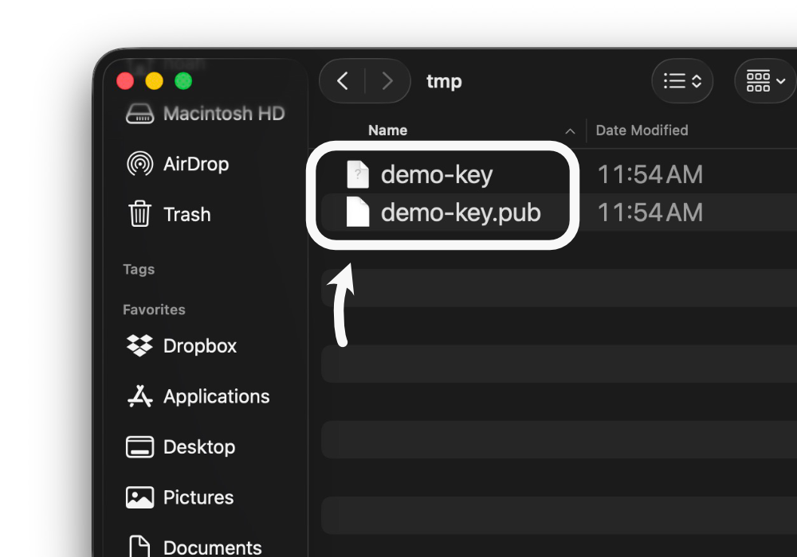
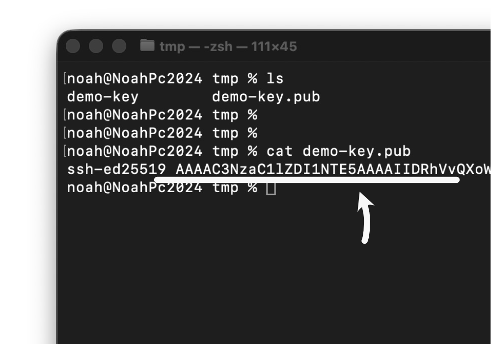
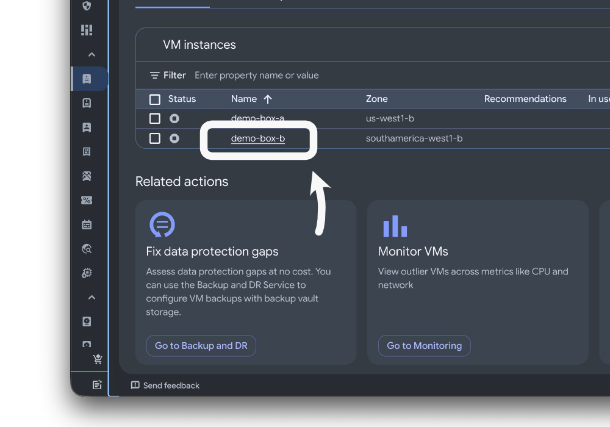
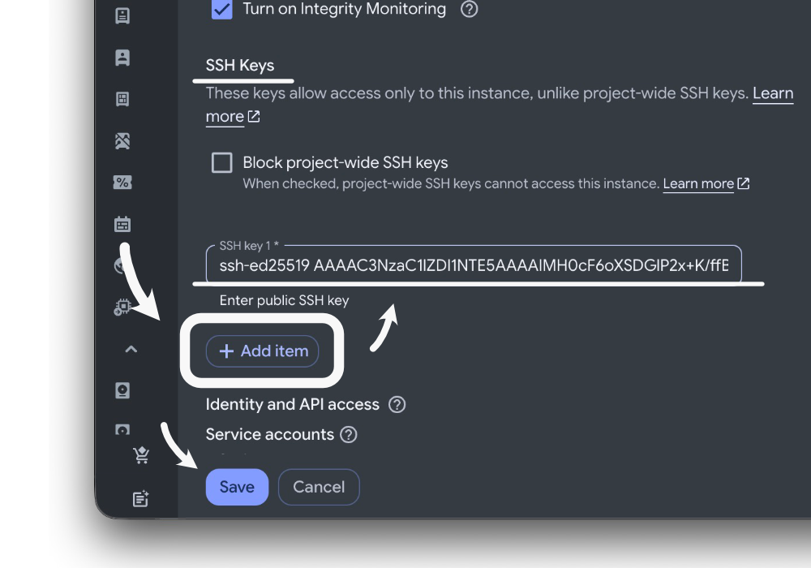
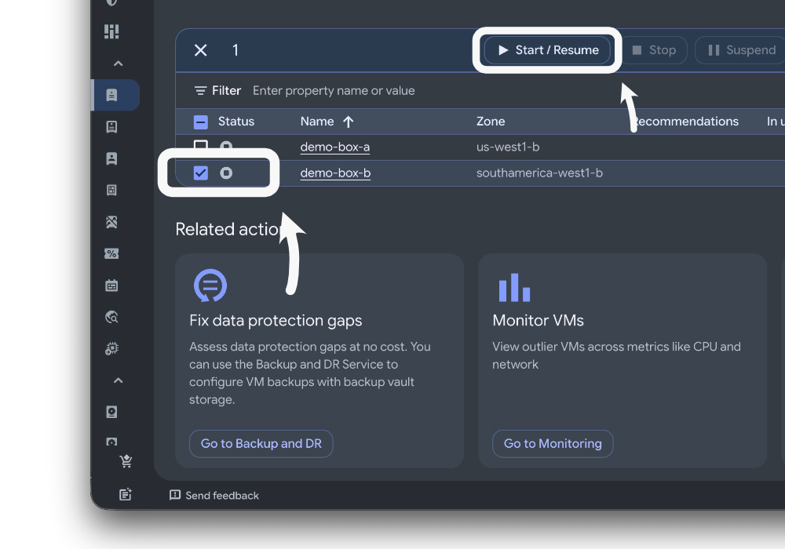

What happens on login?
Once you log in, you can use the command-line terminal to run Linux commands on your VM. You’ll start in your account’s home directory, where you can create, edit, and delete files. But really, you have access to the full file system. You can perform administrative tasks, such as installing software or configuring settings. You can even integrate your VM with other systems or services.
Video Demonstration
This video demonstrates all five of the steps explained below. Thanks for watching.
Step 1. Get Your Key
Create a SSH key, if you haven’t already done so.
- Create a file folder
- Get the path to this folder
- Create a public-private key pair, saving it in this folder.
You should be able to see your keys in your file explorer.

Step 2. Print & Copy Your Public Key
Using the command line, enter ‘cat YOUR_KEY.pub’ but replace YOUR_KEY.pub with the file path and name of your public key.
- Open macOS terminal or Microsoft PowerShell.
- Type the cat command to print your public key
- Copy the printed text to your clipboard.
The cat command:
cat file_path/filename of your public keyThe type command:
type file_path/filename of your public keyusername@hostname and remember your username.
3. Navigate to Your Google Cloud Instance
Using your web browser, find your Google Cloud instance.
- Open this link to Google Cloud’s welcome page.
- In the menu on the left-hand side, select “Compute Engin” and then “VM Instances.”
- Find the “name” column and click on the name of your VM.

4. Add Your SSH Key
- In the upper left, click the “Edit” button
- Scroll down until you find the “SSH Keys” section
- Click the “Add item” button
- Paste your printed public SSH key into the text input area
- Press “Enter” or click the “Save” button located at the bottom of the screen

5. Login with SSH
- Go back to the VM Instances page
- Start your VM if it is not already running
- Click on the check box in the “Status” column for your VM
- Click “Start or Resume”
- Copy the IP address in the “External IP” column
- Open macOS terminal or Windows PowerShell
- Run an SSH login command
Remember, the SSH login ends with username@host_ip_address. Your username was at the end of your public key, and your host address is the external IP address.
